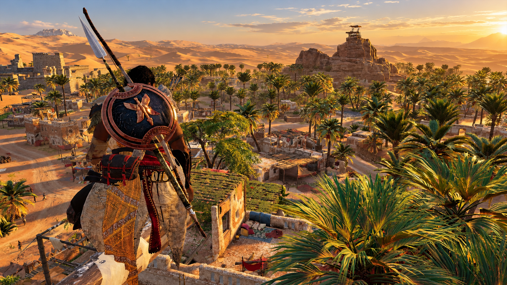
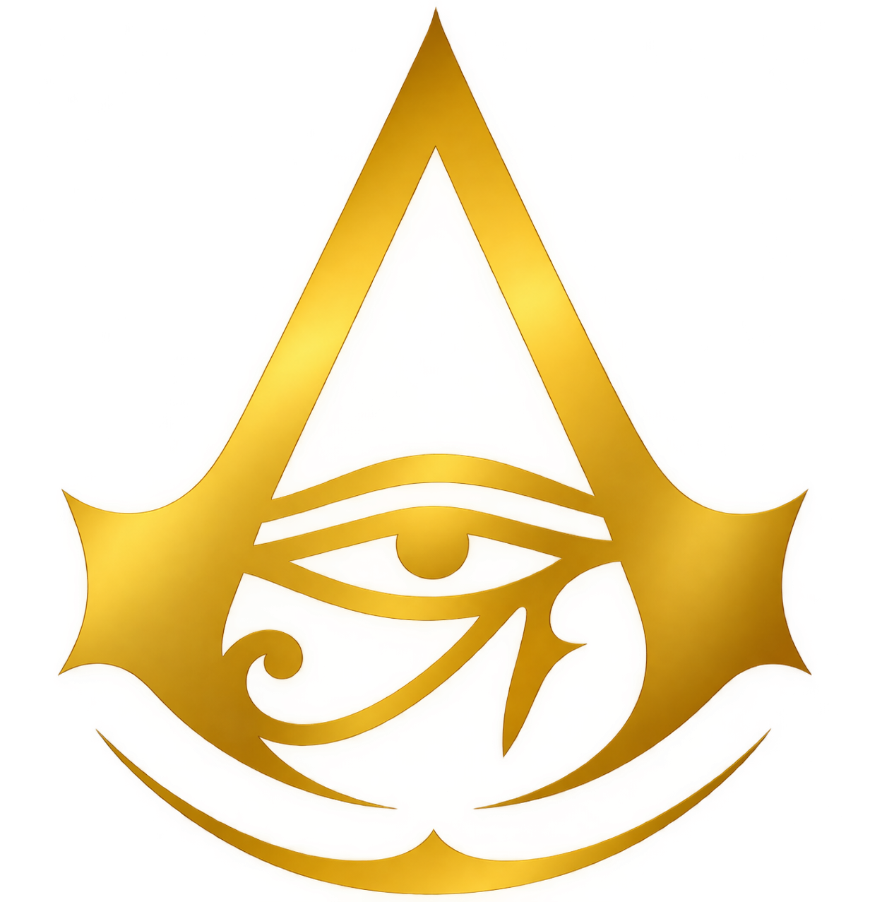

01
Siwa
Domov medžaje

ASSASSIN'S CREED ORIGINSEgypt, 49 př. n. l.
Poušť si pamatuje každý krok. Vstup do příběhu Bayeka ze Siwy — ochránce, který hledá pravdu v zemi bohů, intrik a ztracených civilizací.
Než vzniklo bratrstvo, stál v jeho středu jeden muž.
Zrod bratrstva
Před templáři, před asasíny, existoval jeden muž, který stál mezi lidmi a chaosem. Bayek, poslední medžaj, se vydává na cestu pomsty, která promění celý svět.
Nic není pravda. Všechno je dovoleno.
— Staré krédoJedna země. Tisíc příběhů.
Domov medžaje
V dálce od velkých měst leží oáza, kde Bayek zná každý kámen. Tady začíná jeho cesta a tady se rodí otázky, které otřesou celým Egyptem. Mezi palmami, prameny a rozpálenými skalami hledá stopy po minulosti své rodiny a chrání obyvatele, kteří se nemohou bránit sami.
← Zpět na lokaceMěsto bohů
Starobylé město plné chrámů, tržišť a skrytých mocenských her. Za zlatými zdmi se rozhoduje o budoucnosti celého království. Na březích Nilu se potkávají kněží, vojáci i obchodníci a každý z nich může ukrývat informaci, která Bayeka zavede k dalšímu nepříteli.
← Zpět na lokaceStíny pyramid
Mezi pyramidami a rozpálenými skalami se minulost setkává s nebezpečím. Gíza ukrývá tajemství, která čekají na odhalení pod vrstvami písku. Stíny monumentů mění směr s každou hodinou a v jejich okolí se snadno ztratí nejen poutník, ale i stopa vedoucí k lidem, kteří tahají za nitky Egypta.
← Zpět na lokaceVyber svůj osud
Tři cesty, jeden cíl. Každé rozhodnutí zanechá stopu v písku.